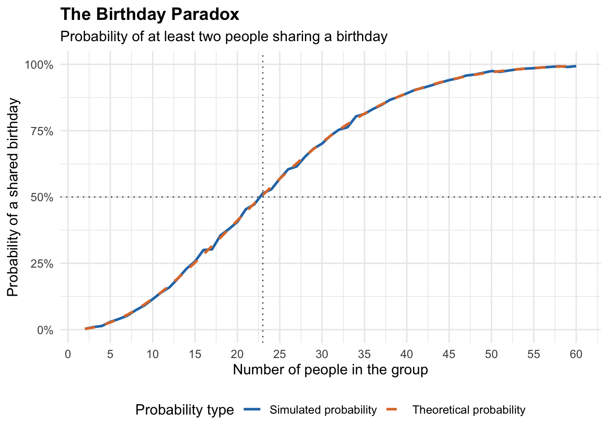

Code
library(tidyverse)
library(purrr)
library(ggplot2)How Group Size Changes the Probability of Shared Birthdays
El Hadji Dieye
November 1, 2026
Have you ever wondered how many people need to be in a room before there is a good chance that at least two of them share the same birthday? Surprisingly, the answer is much smaller than most people expect, like we did in class.
For this project, I investigate how the number of people in a group affects the probability that at least two individuals share a birthday. I use a simulation in R to generate thousands of groups of different sizes and calculate how frequently a shared birthday occurs. I also compare the simulated probabilities with their theoretical values to understand how accurately the simulation represents the mathematical relationship.
The Birthday Paradox is a probability problem that examines the likelihood of at least two people sharing a birthday in a group.
For this simulation, I make the following assumptions:
The research question is:
How does increasing the number of people in a group affect the probability that at least two people share a birthday?
This is interesting because our intuition often suggests that a much larger group is needed before a shared birthday becomes likely. However, probability theory predicts that in a group of just 23 people, the probability is already greater than 50%.
First, I load the packages needed for the simulation and visualization.
I begin by writing a function called simulate_birthday(). This function generates a random birthday for each person in a group. It then checks whether any birthdays are repeated.
The function returns TRUE if at least two people share a birthday and FALSE otherwise.
This function allows me to simulate groups of different sizes without having to write separate code for each group.
A single simulation is not enough to estimate a probability reliably. Therefore, I repeat the experiment 5,000 times for each group size.
I use map() from the purrr package to apply the simulation across different group sizes. Within each group size, I use map_lgl() to repeat the experiment and record whether a shared birthday occurred.
# A tibble: 6 × 2
group_size probability
<int> <dbl>
1 2 0.003
2 3 0.0098
3 4 0.0138
4 5 0.0294
5 6 0.0402
6 7 0.0526The resulting dataset contains each group size and its estimated probability of having at least two people with the same birthday.
To evaluate the accuracy of my simulation, I also calculate the theoretical probability of a shared birthday.
Rather than calculating the probability of a match directly, I first calculate the probability that everyone has a different birthday. I then subtract that probability from one.
I combine the simulated and theoretical probabilities into one dataset for comparison.
# A tibble: 6 × 3
group_size probability theoretical_probability
<int> <dbl> <dbl>
1 2 0.003 0.00274
2 3 0.0098 0.00820
3 4 0.0138 0.0164
4 5 0.0294 0.0271
5 6 0.0402 0.0405
6 7 0.0526 0.0562 The following graph compares the probabilities estimated through simulation with the theoretical probabilities for groups ranging from 2 to 60 people.
ggplot(final_results, aes(x = group_size)) +
geom_line(
aes(
y = probability,
color = "Simulated probability"
),
linewidth = 1
) +
geom_line(
aes(
y = theoretical_probability,
color = "Theoretical probability"
),
linewidth = 1,
linetype = "dashed"
) +
geom_hline(
yintercept = 0.5,
color = "gray40",
linetype = "dotted"
) +
geom_vline(
xintercept = 23,
color = "gray40",
linetype = "dotted"
) +
scale_y_continuous(
labels = scales::percent,
limits = c(0, 1)
) +
scale_x_continuous(
breaks = seq(0, 60, by = 5)
) +
scale_color_manual(
name = "Probability type",
values = c(
"Simulated probability" = "#2878B5",
"Theoretical probability" = "#E07A35"
)
) +
labs(
title = "The Birthday Paradox",
subtitle = "Probability of at least two people sharing a birthday",
x = "Number of people in the group",
y = "Probability of a shared birthday"
) +
theme_minimal(base_size = 12) +
theme(
legend.position = "bottom",
plot.title = element_text(face = "bold")
)
The graph illustrates a clear positive relationship between group size and the probability of sharing a birthday. As the number of people increases, the probability of at least one shared birthday also increases.
One particularly interesting observation is that the probability exceeds 50% at approximately 23 people. This is surprising because many people might expect that a much larger group would be necessary.
The simulated probabilities generally follow the theoretical probabilities closely. Small differences between the two lines are expected because the simulation uses a finite number of repetitions rather than examining every possible birthday combination.
To better understand the result, I examine the theoretical and simulated probabilities specifically for a group of 23 people.
# A tibble: 1 × 3
group_size probability theoretical_probability
<int> <dbl> <dbl>
1 23 0.514 0.507At 23 people, the theoretical probability of at least two people sharing a birthday is approximately 50.7%. This means that a shared birthday is actually more likely than not, even in a relatively small group.
This simulation demonstrates how quickly the probability of sharing a birthday increases as the size of a group grows. The results show that only 23 people are needed for the probability of at least one shared birthday to exceed 50%, which is much lower than many people would intuitively expect. Comparing the simulated results with the theoretical probabilities also demonstrates how repeated random sampling can approximate mathematical probabilities. Overall, this project shows how simulation can help us understand probability problems that are not immediately intuitive.
For this project, I developed an R function to generate random birthdays and identify whether a group contained at least one shared birthday. I used map() and map_lgl() to repeat this experiment 5,000 times across 59 different group sizes. I then compared the estimated probabilities with their theoretical values using a visualization created with ggplot2. Through this process, I demonstrated how simulation can be used to investigate probability and compare experimental results with mathematical expectations.